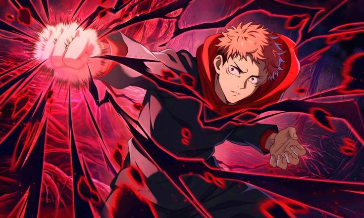
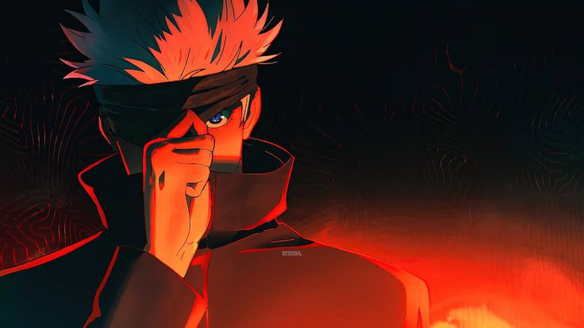
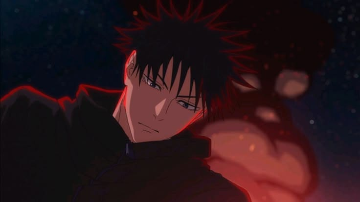
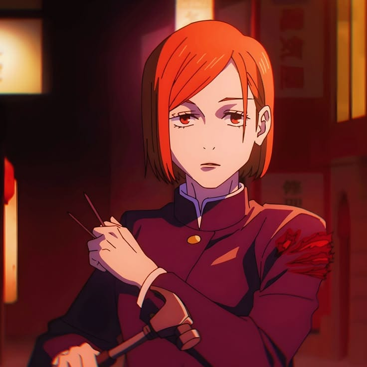

O mundo das maldições e feiticeiros
Jujutsu Kaisen é um anime baseado no mangá criado por Gege Akutami. A história segue Yuji Itadori, um estudante que entra no mundo das maldições após engolir um objeto amaldiçoado.
Um jovem forte e determinado que se torna hospedeiro de Sukuna.

O feiticeiro mais poderoso, conhecido por suas habilidades incríveis.

Usuário de técnicas de invocação de sombras.

"é uma feiticeira que utiliza martelo e pregos para atingir seus inimigos com técnicas ligadas á alma
